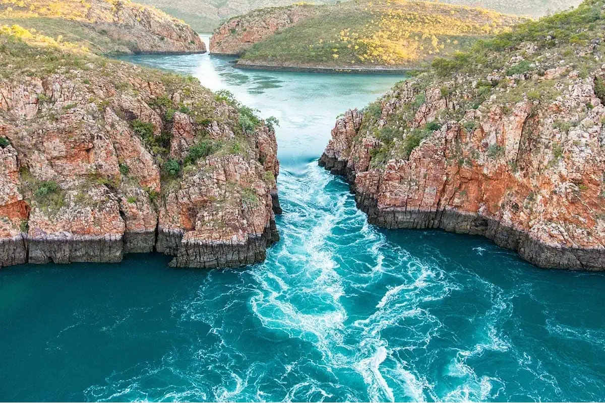

Waterfalls are mostly freshwater but can consist of various types of water, such as mineral-rich water, spring water, or even saltwater in some cases. For example Niagara Falls in Ontario is freshwater because the great lakes empty into it, while the Horizontal Falls in Australia is unique as it isn't technically a waterfall but is higher on one side and has fast moving water caused by the tidal flows. Additionally, underwater saltwater waterfalls exist such as in the Denmark Strait.
